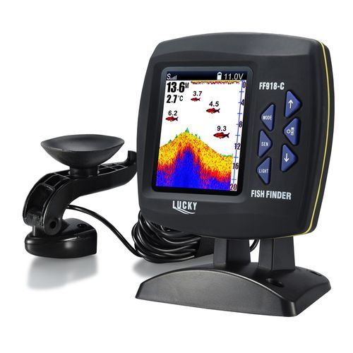

.getJSON("https://api.waziup.io/api/v2/devices/6370174768f3190a67e225b0", function(data) {
// Array of Leaflet markers
var markers = [];
// For each row in Fish_Feeder, create a Leaflet marker
for (var i = 0; i < data.length; i++) {
var item = data[i];
// Extract coordinates for each project, convert strings to floats
var coordinates = [
parseFloat(item.geocoded_column.latitude),
parseFloat(item.geocoded_column.longitude)
]
// Create a marker with a custom icon
var marker = L.marker(coordinates, {
icon: L.icon({
iconUrl: 'images/americorps.png',
iconSize: [24, 24],
iconAnchor: [12, 12],
opacity: 0.5
})
}).bindTooltip(item.sponsor + '
' + item.project_description);
// Add marker to the array of markers
markers.push(marker);
}
// Create a Leaflet layer group from array of markers
var layer = L.layerGroup(markers);
layer.addTo(map); // add layer to the map
// Add layer to the legend, together with the little icon
legend.addOverlay(layer, 'AmeriCorps NCCC ')
})